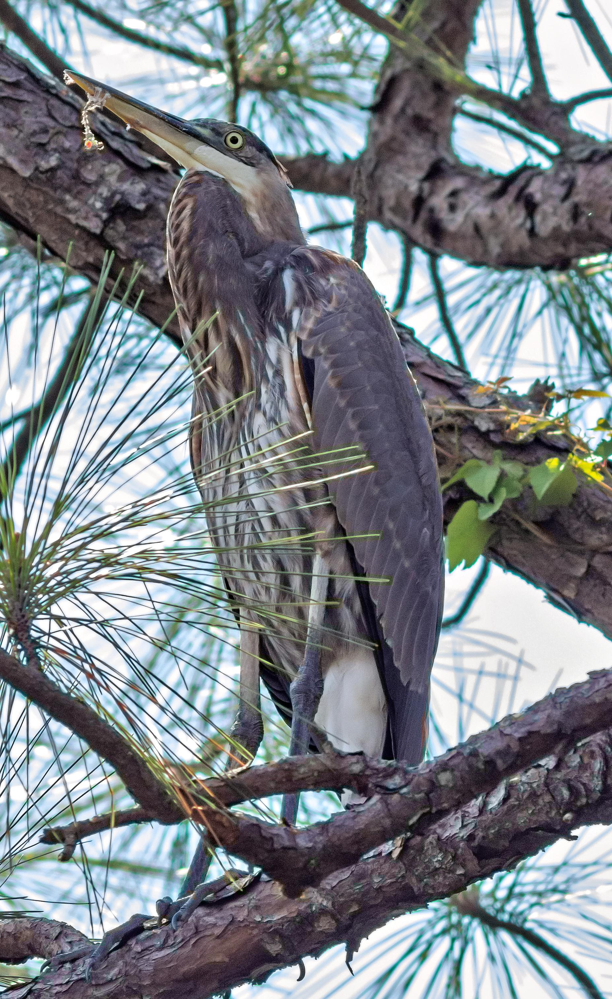

Liu lab - university of new orleans
Homepage
research
publications
people
photos of the week
photos
Blue heron with thread on lower beak, UNO campus, 9/18/2024

Copyright (c) 2024 Liu Lab at UNO. All rights reserved.